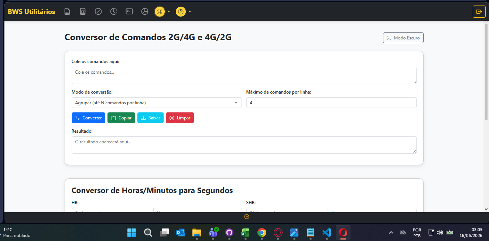
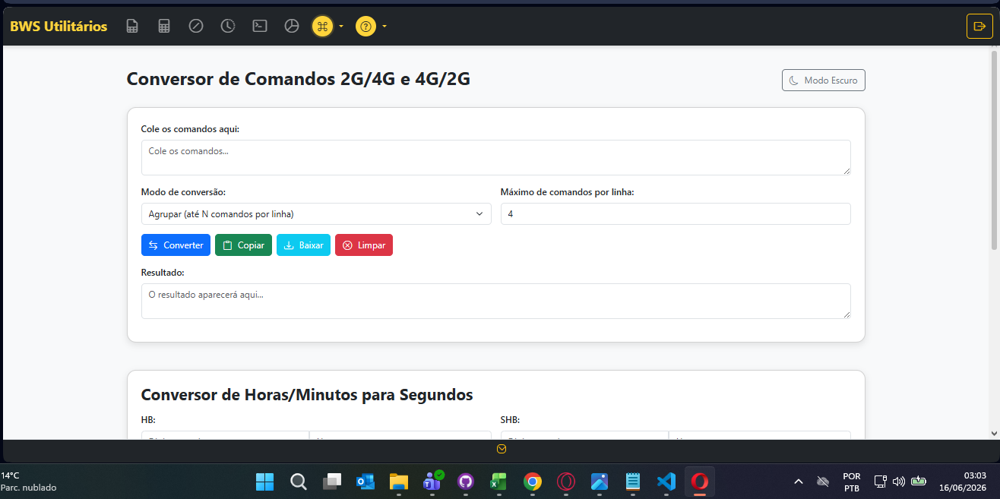
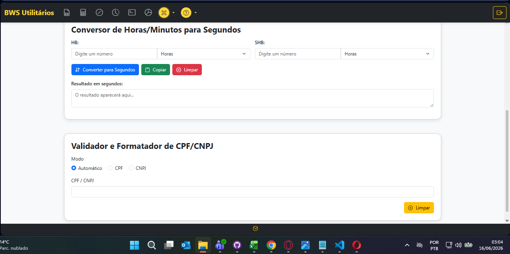
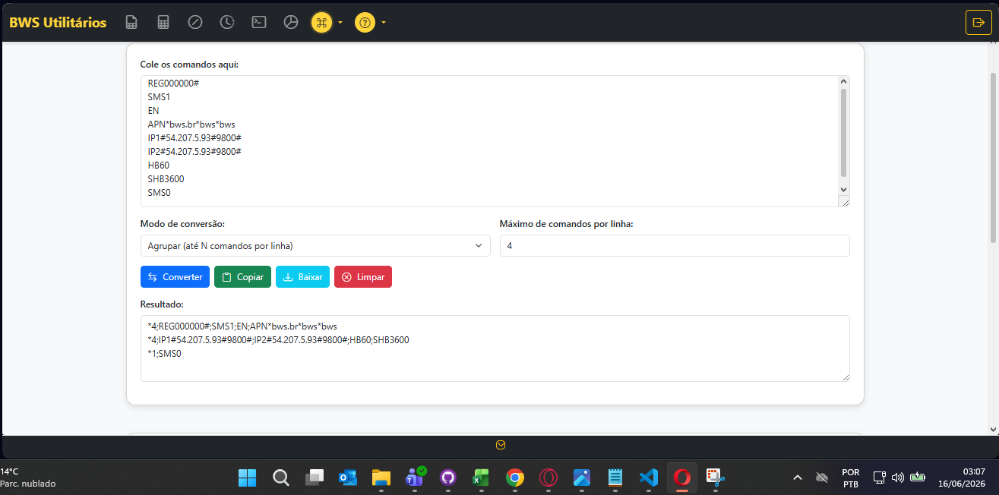
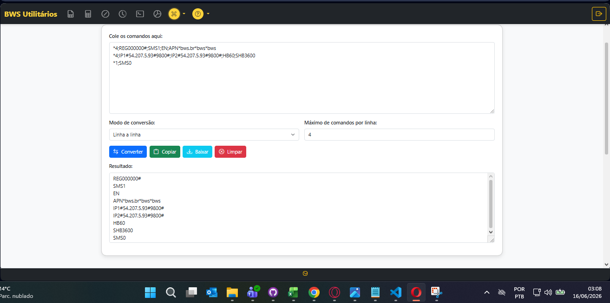
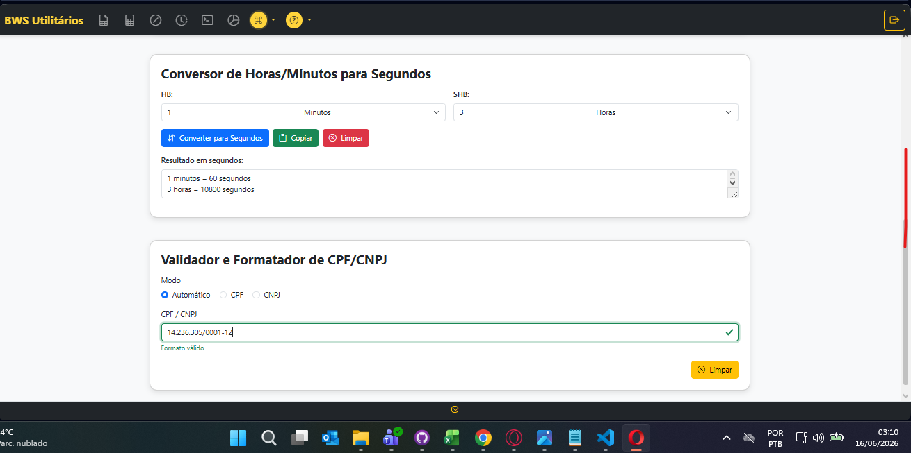

Converta comandos entre formatos, calcule segundos para HB/SHB e formate CPF/CNPJ para consulta na Saitro

📁 imagens/convComandos/convComandos1.png
O Conversor de Comandos serve para pegar comandos prontos e colocá-los no formato desejado:
;
📁 imagens/convComandos/convComandos2.png
O conversor permite alternar entre formatos de comando para diferentes tecnologias:

📁 imagens/convComandos/convComandos3.png
O conversor oferece duas funcionalidades essenciais:
Converte horas e minutos em segundos para configurar HB (Heartbeat) e SHB (Sleep Heartbeat) dos equipamentos.
Valida e formata CPF/CNPJ para consulta correta na plataforma Saitro.

📁 imagens/convComandos/convComandos4.png
Converta comandos do formato Linha a Linha para Múltiplos Comandos por Linha:

📁 imagens/convComandos/convComandos5.png
Converta comandos do formato Múltiplos Comandos por Linha para Linha a Linha:

📁 imagens/convComandos/convComandos6.png
O conversor formata CPF e CNPJ para consulta correta na plataforma Saitro:
Antes: 12345678901
Depois: 123.456.789-01
Antes: 12345678000199
Depois: 12.345.678/0001-99
Entre formatos de comando
Segundos para HB/SHB
CPF e CNPJ
Comandos prontos